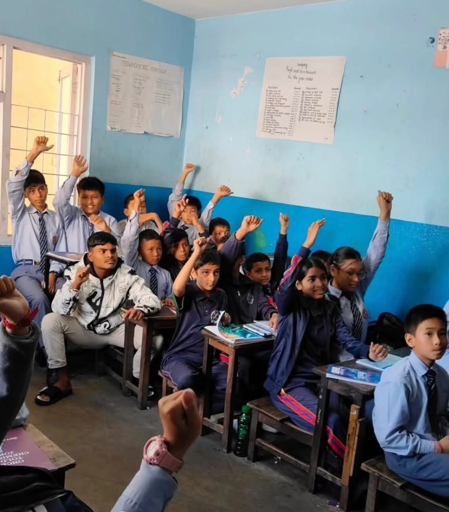

Session 09 / looking forward
What we carry on
A proxy reflection on the signs, questions, and friendships that continue after the session.

This is proxy text for a future session report. Our ninth institution visit brought the project back to its central question: what changes when people choose to keep showing up for one another?
We gathered reflections, revisited favorite signs, and sketched what a future session could become. The real names, images, and voices will make this page complete.